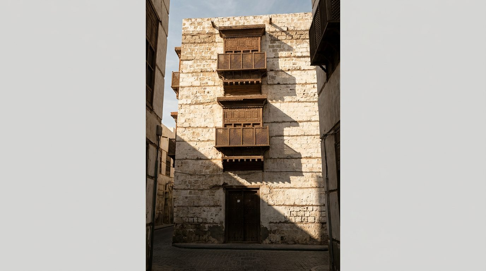
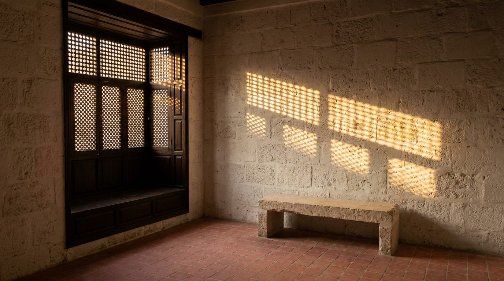

Atlante · INT-SA-02 · Arabia Saudita · Golfo
Casa in pietra corallina ad Al-Balad, Jeddah, rawasheen e ombra
Esempi · esterno e interno


Perché funziona
In Arabia Saudita il patrimonio higazeno è diventato un tema di rappresentanza: il committente che compra italiano vuole una casa che regga Al-Balad senza folklore, perché il corallo e il legno sono già abbastanza espressivi. Per Poetica questa voce serve a mostrare il prodotto su un fondo irregolare e materico, dove la qualità della finitura si misura nel contrasto con il muro e non nella propria lucentezza. Il made in Italy entra nella misura del giunto e nella lavorazione del legno, non nel lampadario traforato né nel tappeto berbero. Non deve diventare un museo etnografico: la casa resta abitata, la luce resta una sola.
Architettura · elementi riproducibili
- casa-torre su 4 livelli, vani 3,2x4,0 m di luce netta, altezza 3,0 m per piano
- muri portanti in blocchi di corallo 400x250x200 mm, giunti di calce 15 mm a vista
- rawasheen in sporto di 600 mm, h 2,0 m, listelli 45x45 mm a interasse 80 mm
- pavimento in cotto 400x400 mm, giunto 5 mm, finitura a cera, nessun tappeto fisso
- porta a due battenti h 2,1 m, larghezza 900 mm per anta, soglia in pietra 30 mm
- soffitto con travi 100x150 mm a interasse 600 mm, canniccio intonacato a calce
- proporzione chiave: vano alto 3,0 m e largo 3,2 m, una sola apertura per parete
Fatto verificato: Historic Jeddah è iscritta nella Lista del Patrimonio Mondiale UNESCO nel 2014; la descrizione cita le case-torri di fine XIX secolo dell'élite mercantile e la fusione delle tradizioni costruttive in corallo del Mar Rosso con apporti delle rotte commerciali (UNESCO, sito 1361).
Fatto verificato: le case tradizionali higazene di Al-Balad sono caratterizzate da finestre in legno roshan e da mashrabiya lignee (Wikipedia, Al-Balad, Jeddah).
Fatto verificato: il termine mashrabiya è attestato a Jeddah anche come shanashil o rowshin (Wikipedia, Mashrabiya).
Valutazione: la direzione in pietra corallina regge; il registro quiet e la luce di taglio da vano profondo contrastano con il majlis in terra cruda del Najd (int-sa-01) per materiale, colore e temperatura della luce.
Luce
Prompt di generazione (EN)
Interior of a first-floor room in a restored coral-stone merchant house in Al-Balad, Jeddah, empty but for one low bench of pale limestone. Walls of coral blocks thinly whitewashed, joints still readable, matt; floor of small rosy terracotta tiles with a 5 mm joint; one deep timber window bay projecting inward, its lattice closed. A single key light: hard late-afternoon sun at 40 degrees, 4400 K, striking through the lattice and washing the opposite coral wall, leaving the rest of the room two and a half stops down in warm shadow. 30 mm lens, camera at 1.4 m, two-point perspective, verticals parallel. Grade warm, deep and slightly dry, no HDR flatness. no people, no text, no logos